Rediseño de cw, pantalla por pantalla
Actual (borde punteado) es una captura real de cw 0.9, para comparar; las letras son las propuestas.
Cada pantalla de la app de escritorio y de la versión de terminal, con dos o tres opciones. Todas comparten el mismo lenguaje sobrio:
grises cálidos, un acento azul grisáceo solo para el foco y color únicamente en los estados (● ámbar trabajando · ● rojo pide permiso · ● verde lista · ○ suspendida).
Para elegir, dime por pantalla la letra: por ejemplo «inicio A, sesión C, menú B…».
Escritorio Inicio · workspaces
Lo primero que se ve al abrir la app.
Captura real de la app de escritorio en la versión 0.9.
Una fila por workspace con su estado, pestañas y cuándo se usó. Escala bien con muchos workspaces.
Workspaces
Retoma uno o crea uno nuevo.
Tarjetas sin color de fondo, con las pestañas como texto gris. Más visual, ocupa más espacio.
Workspaces
Retoma uno o crea uno nuevo.
A la izquierda la lista; a la derecha el workspace elegido con sus pestañas y sesiones antes de abrirlo.
Backend KYC
abierto · 4 pestañas · 7 sesiones · ~/work/backend
Escritorio Workspace · una sesión
La pantalla de todos los días: una pestaña con una sesión de Claude a la vista.
Captura real de la app de escritorio en la versión 0.9.
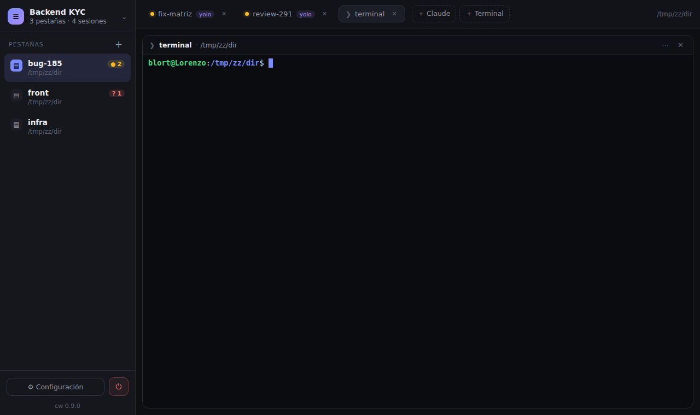
Pestañas a la izquierda; las sesiones de la pestaña como pestañas de navegador arriba; línea de estado abajo.
La barra lateral se reduce a un riel con la inicial de cada pestaña y su punto de estado; se expande al pasar el ratón. Más espacio para la terminal.
Árbol: cada pestaña desplegable con sus sesiones debajo. Arriba solo el título de la sesión. Todo se ve de un vistazo.
Escritorio Vista combinada
Dos o más sesiones a la vez en la misma vista.
Captura real de la app de escritorio en la versión 0.9.
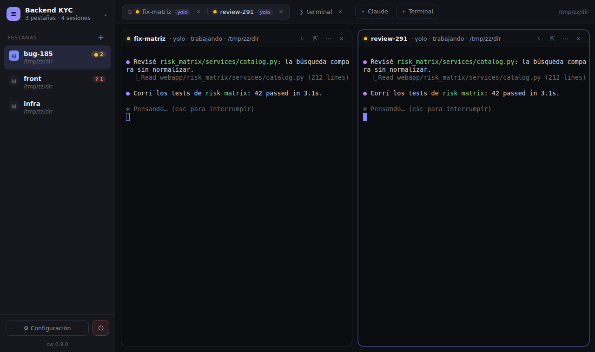
Cada columna tiene una línea con nombre, alias y acciones; la enfocada se subraya con el acento.
Las columnas van limpias; el nombre aparece en una etiqueta flotante en la esquina, y la enfocada tiene el fondo un tono más claro.
Una sesión grande y las demás como miniaturas en una tira a la derecha; clic en una miniatura la trae al centro.
Escritorio Pestaña vacía
Una pestaña recién creada, sin sesiones.
Captura real de la app de escritorio en la versión 0.9.
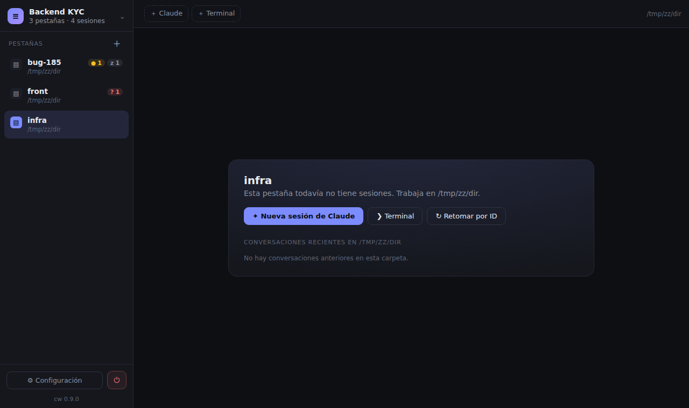
Tres acciones y la lista de conversaciones recientes de la carpeta.
nueva
~/work/backend
Como una paleta: un buscador arriba y la lista de conversaciones; Enter abre la elegida, o «Nueva» arriba.
Claude, Terminal y Retomar como tres botones grandes; los recientes debajo, más pequeños.
Escritorio Nueva sesión
Ctrl+T o «+» en la barra de sesiones.
Captura real de la app de escritorio en la versión 0.9.
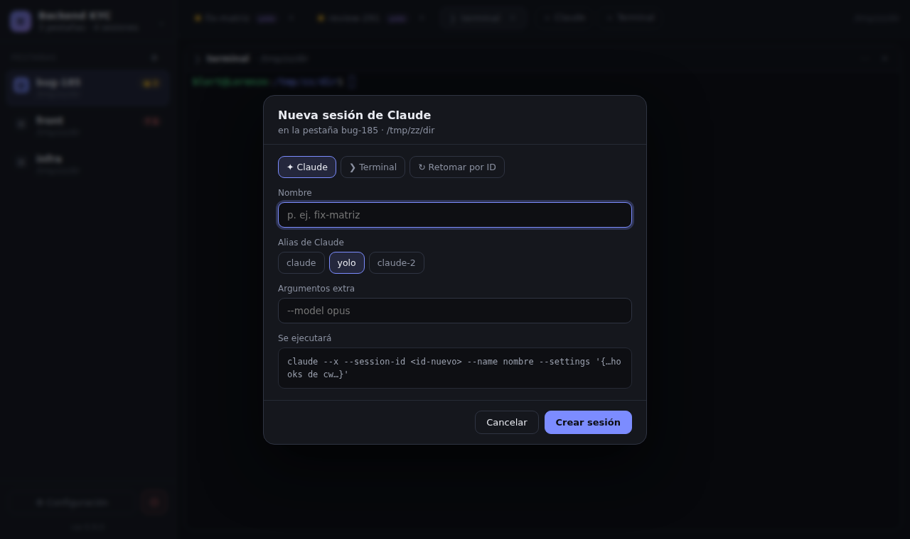
Modal con segmentos Claude / Terminal / Retomar, el alias como segmentos y la vista previa del comando.
Se abre desde la derecha sin tapar la sesión actual; útil para comparar mientras se configura.
«+» crea una pestaña «nueva» y el formulario aparece en el área de la terminal; Enter la arranca.
Escritorio Nueva pestaña
«+» en la barra lateral (Alt+T).
Captura real de la app de escritorio en la versión 0.9.
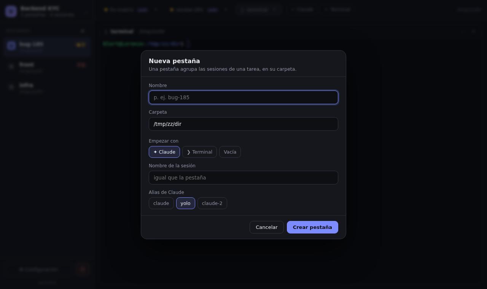
Nombre, carpeta con sugerencias y con qué empieza.
Aparece una fila editable en la lista de pestañas; al escribir la carpeta salen sugerencias debajo. Sin modal.
Escritorio Editar sesión
Nombre, alias y argumentos de una sesión existente.
Captura real de la app de escritorio en la versión 0.9.
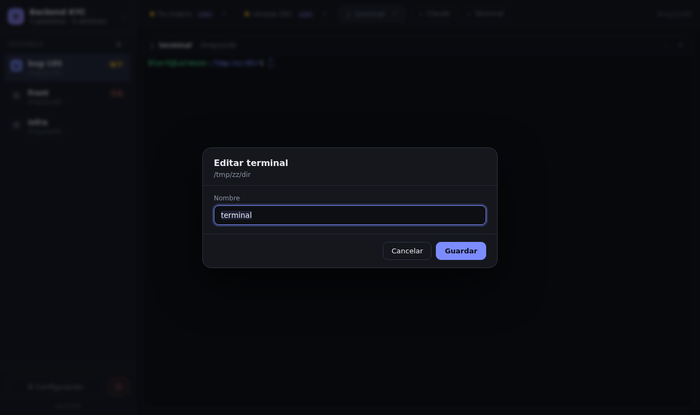
Igual que Nueva sesión, con «Guardar» y «Guardar y reiniciar».
Panel fijo a la derecha con las propiedades de la sesión enfocada; los cambios se aplican al salir del campo.
Escritorio Cambiar alias de varias sesiones
De una vista, una pestaña o todo el workspace.
Captura real de la app de escritorio en la versión 0.9.
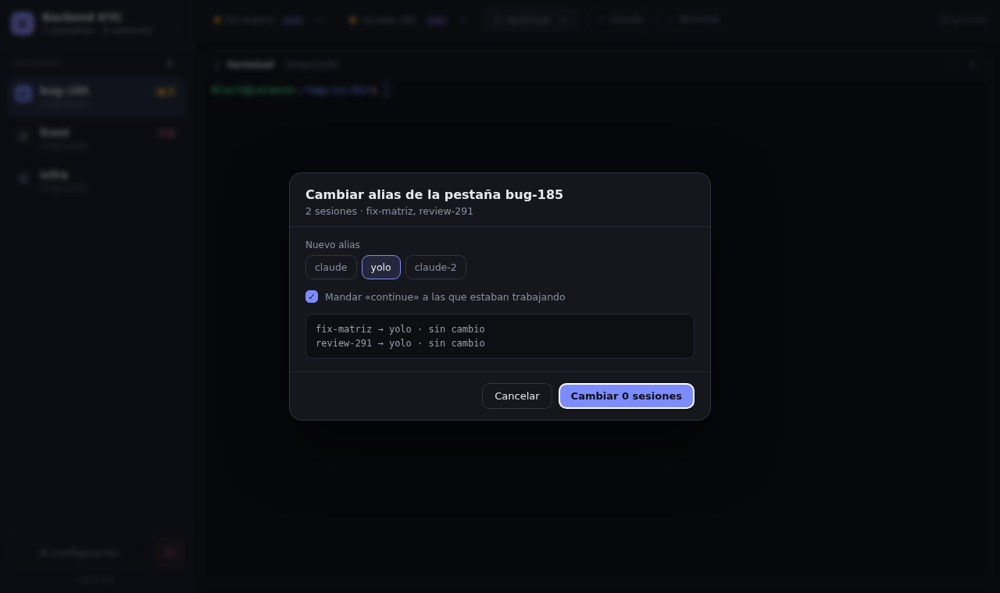
Elige el alias y muestra qué pasa con cada sesión antes de aplicarlo.
review-291 → claude-2-yolo · se reinicia y continúa
tests → claude-2-yolo · se reinicia
Se marcan sesiones en la barra (Ctrl+clic) y aparece una barra de acciones abajo: alias, suspender, cerrar.
Escritorio Confirmar cerrar / apagar
Acciones que cierran sesiones.
Captura real de la app de escritorio en la versión 0.9.
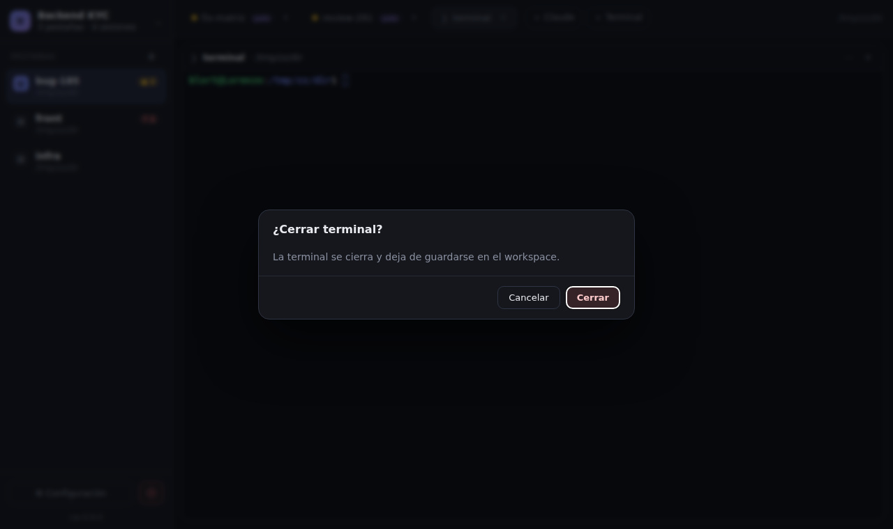
Pregunta, explicación breve y botón rojo; Enter confirma.
Claude se cierra; la conversación queda en disco y puedes reabrirla con Ctrl+Shift+T.
Cierra al instante y muestra un aviso abajo con «Deshacer» durante unos segundos (reabre la sesión en su conversación).
Escritorio Configuración
Ajustes generales, alias de Claude, apariencia y atajos.
Captura real de la app de escritorio en la versión 0.9.
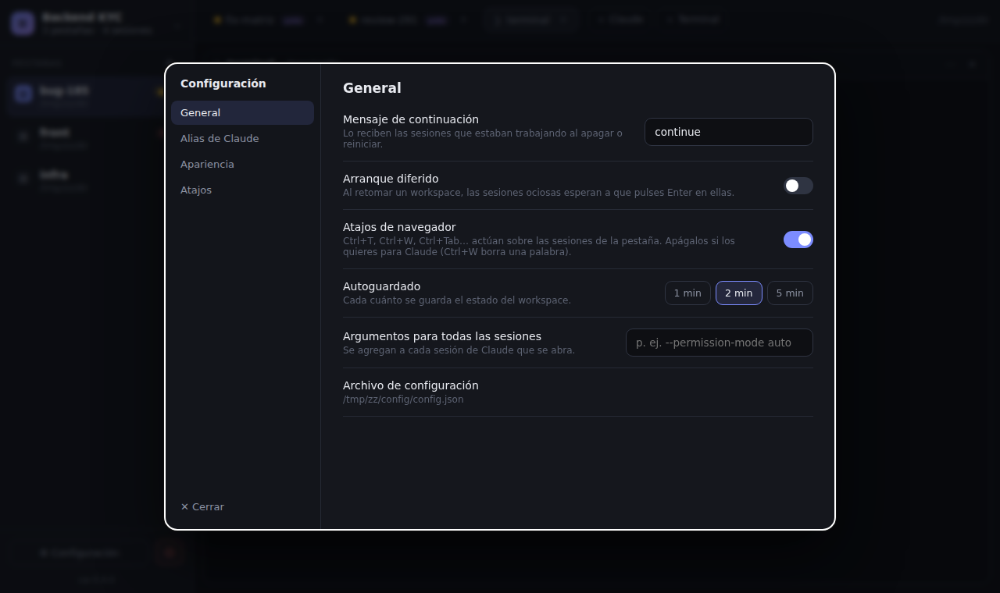
Navegación a la izquierda y ajustes en filas con su explicación.
General
Los ajustes reemplazan la vista del workspace (con «← Volver»), en una sola columna larga con encabezados.
Ajustes
Escritorio Sesión suspendida / con error
Cómo se ve una sesión que no está corriendo.
Captura real de la app de escritorio en la versión 0.9.
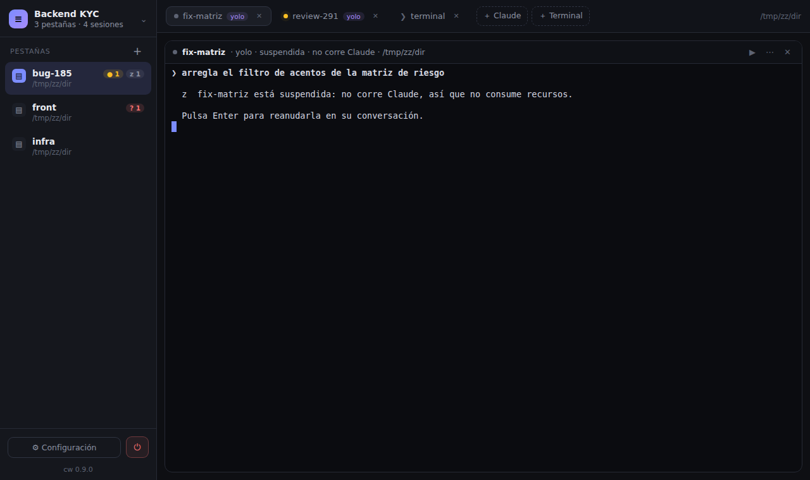
La terminal sigue visible (atenuada) y una franja ofrece la acción: Reanudar, o Reabrir si salió con error.
La terminal se oculta y se muestra una tarjeta con el estado, la última actividad y el botón.
fix-matriz está suspendida
Su conversación sigue guardada. Última actividad: hace 2 h.
Escritorio Nuevo workspace / desde una conversación
Crear un workspace en una carpeta o alrededor de una conversación existente.
Captura real de la app de escritorio en la versión 0.9.
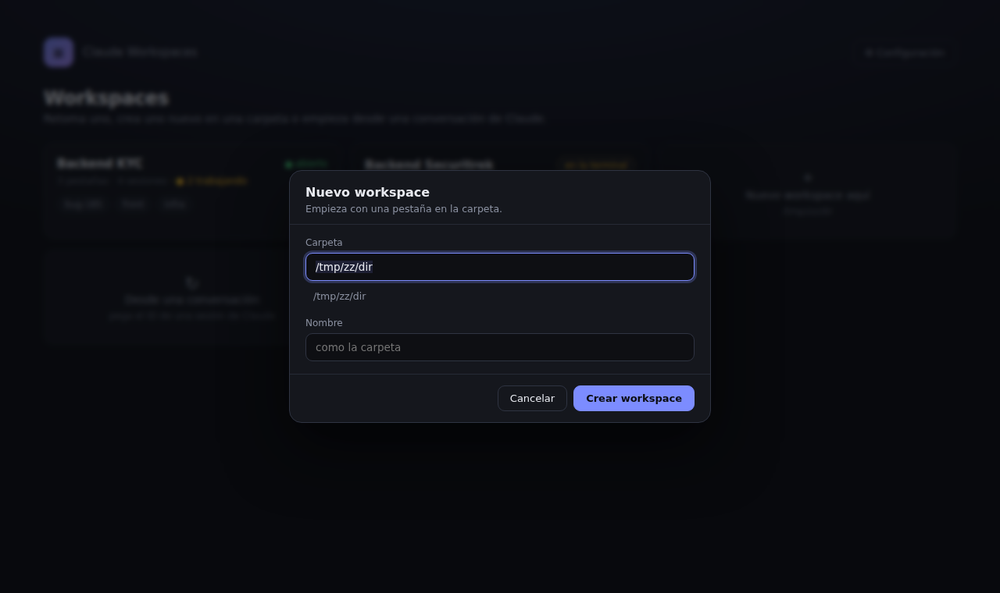
Un solo diálogo: «En una carpeta» o «Desde una conversación» (pegando su ID, con la búsqueda en vivo).
Arriba de la lista de workspaces hay un campo único: una ruta crea en esa carpeta, un ID crea desde la conversación.
Workspaces
Terminal Inicio (comando cw)
Lo que aparece al escribir cw en una terminal.
Captura real de la versión de terminal 0.9 (tmux), con sus colores.
≡ cw 0.9.0 workspaces de Claude Code
╭────────────────────────────────────────────╮
│ + Nuevo workspace aquí │
│ /tmp/zz/dir │
╰────────────────────────────────────────────╯
RETOMAR UN WORKSPACE clic para abrir
1 backend-kyc ● abierto 4 pestañas, 5 sesiones ahora bug-185 · front · infra…
2 backend-3 ● abierto 0 pestañas, 0 sesiones
+ Nuevo aquí
↻ Nuevo desde una conversación (ID)… Salir Tabla alineada; la fila elegida con fondo gris; acciones con una letra en la línea de abajo.
cw workspaces NOMBRE ESTADO PESTAÑAS ÚLTIMO USO ▸ Backend KYC ● abierto 4 ahora Revisión 291 ● 2 trabajaban 2 ayer Manual KYC ○ apagado 1 12 oct + Nuevo workspace aquí ~/work/backend ↻ Desde una conversación… ↑↓ elegir · Enter abrir · n nuevo · i por ID · r renombrar · x borrar · q salir
Lista a la izquierda y, a la derecha, las pestañas y sesiones del workspace elegido.
WORKSPACES │ Backend KYC abierto · ~/work/backend │ ▸ Backend KYC │ bug-185 ● fix-matriz ● review-291 ○ tests Revisión 291 │ front ? arb-strings Manual KYC │ infra z 3 suspendidas │ + nuevo aquí │ Enter abrir · r renombrar · s apagar ↻ por ID │ ↑↓ elegir · Enter abrir · q salir
Terminal Barra principal
Pestañas, sesiones y estado, siempre a la vista.
Captura real de la versión de terminal 0.9 (tmux), con sus colores.
≡ backend-kyc bug-185 ●2 ✕ front ?1 ✕ infra z1 ✕ + ? Ayuda ⏻ ━━━━━━━━━━━━ ────────── ────────── fix-matriz ● yolo ✕ review-291 ● yolo ✕ terminal ✕ + Claude + Terminal /tmp/zz/dir ❯ arregla el filtro de acentos de la matriz de riesgo ● Revisé risk_matrix/services/catalog.py: la búsqueda compara sin normalizar. ⎿ Read webapp/risk_matrix/services/catalog.py (212 lines) ● Corrí los tests de risk_matrix: 42 passed in 3.1s. ✻ Pensando… (esc para interrumpir)
Pestañas en la primera línea, sesiones de la pestaña en la segunda, y abajo los atajos según el contexto.
≡ Backend KYC bug-173 ●1 backend bug-226 ●1 infra z2 + ? ⏻ fix-matriz ● review-291 ● tests ○ ❯ terminal + ~/work/backend ────────────────────────────────────────────────────────────────────────────────────────────────────────────── ❯ arregla el filtro de acentos de la matriz de riesgo ● Revisé risk_matrix/services/catalog.py: la búsqueda compara sin normalizar. ⎿ Read webapp/risk_matrix/services/catalog.py (212 lines) ⎿ Edit catalog.py · +6 −2 ● Corrí los tests de risk_matrix: 42 passed in 3.1s. ✻ Pensando… (esc para interrumpir) ╭──────────────────────────────────────────────────────────────────────────────────────────────────────────╮ │ > │ ╰──────────────────────────────────────────────────────────────────────────────────────────────────────────╯ Ctrl+T nueva · Ctrl+W cerrar · Ctrl+PgUp/PgDn cambiar · clic derecho: acciones · Alt+m menú · Alt+h ayuda
Pestaña › sesiones en una línea; las otras pestañas resumidas a la derecha. Máximo espacio para Claude.
≡ bug-173 › fix-matriz ● review-291 ● tests ○ ❯ terminal + backend bug-226 ●1 infra z2 ? ⏻ ────────────────────────────────────────────────────────────────────────────────────────────────────────────── ❯ arregla el filtro de acentos de la matriz de riesgo ● Revisé risk_matrix/services/catalog.py: la búsqueda compara sin normalizar. ⎿ Read webapp/risk_matrix/services/catalog.py (212 lines) ⎿ Edit catalog.py · +6 −2 ● Corrí los tests de risk_matrix: 42 passed in 3.1s. ✻ Pensando… (esc para interrumpir) ╭──────────────────────────────────────────────────────────────────────────────────────────────────────────╮ │ > │ ╰──────────────────────────────────────────────────────────────────────────────────────────────────────────╯
Todo en una línea al pie, como statusline; arriba queda la sesión desde la primera línea.
❯ arregla el filtro de acentos de la matriz de riesgo ● Revisé risk_matrix/services/catalog.py: la búsqueda compara sin normalizar. ⎿ Read webapp/risk_matrix/services/catalog.py (212 lines) ⎿ Edit catalog.py · +6 −2 ● Corrí los tests de risk_matrix: 42 passed in 3.1s. ✻ Pensando… (esc para interrumpir) ╭──────────────────────────────────────────────────────────────────────────────────────────────────────────╮ │ > │ ╰──────────────────────────────────────────────────────────────────────────────────────────────────────────╯ ────────────────────────────────────────────────────────────────────────────────────────────────────────────── bug-173 ●1 backend bug-226 ●1 infra z2 + │ fix-matriz ● review-291 ● tests ○ +
Terminal Vista combinada
Dos sesiones en la misma vista (paneles de tmux).
Captura real de la versión de terminal 0.9 (tmux), con sus colores.
≡ backend-kyc bug-185 ●2 ✕ front ?1 ✕ infra z1 ✕ nueva ✕ + ? Ayuda ⏻ ━━━━━━━━━━━━ ────────── ────────── ─────── ⧉ fix-matriz ● yolo ✕ │ review-291 ● yolo ✕ terminal ✕ + Claude + Terminal /tmp/zz/dir ━━ fix-matriz ● ━━━━━━━━━━━━━━━━━━━━━━━━━━━━━━━━━━━━━━┳━━ review-291 ● ━━━━━━━━━━━━━━━━━━━━━━━━━━━━━━━━━━━━━━━ ❯ arregla el filtro de acentos de la matriz de riesgo ┃● Revisé risk_matrix/services/catalog.py: la búsqueda c ┃ompara sin normalizar. ● Revisé risk_matrix/services/catalog.py: la búsqueda ┃ ⎿ Read webapp/risk_matrix/services/catalog.py (212 li compara sin normalizar. ┃nes) ⎿ Read webapp/risk_matrix/services/catalog.py (212 l┃ ines) ┃● Corrí los tests de risk_matrix: 42 passed in 3.1s. ┃ ● Corrí los tests de risk_matrix: 42 passed in 3.1s. ┃✻ Pensando… (esc para interrumpir) ┃ ✻ Pensando… (esc para interrumpir) ┃ ┃ ┃ ┃ ┃ ┃ ┃ ┃ ┃ ┃ ┃ ┃ ┃ ┃ ┃ ┃ ┃ ┃ ┃ ┃
La línea de arriba de cada panel lleva su nombre; la del panel enfocado en el color del acento.
≡ Backend KYC bug-173 ●1 backend bug-226 ●1 infra z2 + ? ⏻ fix-matriz ● review-291 ● tests ○ ❯ terminal + ~/work/backend ────────────────────────────────────────────────────────────────────────────────────────────────────────────── ── fix-matriz yolo ───────────────────────────────────────┬── review-291 claude-2 ───────────────────────────────────────── ❯ arregla el filtro de acentos │ ❯ revisa el plan de la 291 │ ● Corrí los tests: 42 passed. │ ● Encontré 3 riesgos en el plan… │ ✻ Pensando… │ ◯ 2 agentes en segundo plano │ │ │ │ │ │ Alt+←/→ cambiar de panel · clic derecho: separar, distribución
Solo un separador vertical; el nombre en negrita en la primera línea de cada panel.
≡ Backend KYC bug-173 ●1 backend bug-226 ●1 infra z2 + ? ⏻ fix-matriz ● review-291 ● tests ○ ❯ terminal + ~/work/backend ────────────────────────────────────────────────────────────────────────────────────────────────────────────── fix-matriz yolo │ review-291 claude-2 ❯ arregla el filtro de acentos │ ❯ revisa el plan de la 291 │ ● Corrí los tests: 42 passed. │ ● Encontré 3 riesgos en el plan… │ ✻ Pensando… │ ◯ 2 agentes en segundo plano │ │ │ │ │ │ Alt+←/→ cambiar de panel · clic derecho: separar, distribución
Terminal Pestaña vacía
Una pestaña sin sesiones.
Captura real de la versión de terminal 0.9 (tmux), con sus colores.
≡ backend-kyc bug-185 ●2 ✕ front ?1 ✕ infra z1 ✕ nueva ✕ + ? Ayuda ⏻ ──────────── ────────── ────────── ━━━━━━━ + Claude + Terminal /tmp/zz/dir nueva /tmp/zz/dir ╭──────────────────────────╮ ╭──────────────────────────╮ │ ✦ Claude │ │ ❯ Terminal │ │ sesión nueva │ │ shell normal │ ╰──────────────────────────╯ ╰──────────────────────────╯ No hay conversaciones anteriores de Claude en este directorio. ↻ Retomar una conversación por su ID…
Igual que la app: tres acciones y la lista de conversaciones de la carpeta.
≡ Backend KYC bug-173 ●1 backend bug-226 ●1 infra z2 + ? ⏻ ────────────────────────────────────────────────────────────────────────────────────────────────────────────── nueva ~/work/backend Nueva sesión de Claude Terminal Retomar por ID RECIENTES EN ESTA CARPETA fix-matriz hace 5 min · yolo «arregla el filtro de acentos de la matriz…» review-291 ayer · claude-2 «revisa el plan de la 291» ↑↓ elegir · Enter abrir · c Claude · t terminal · i por ID
Una lista numerada; se elige con un número. Lo más rápido con teclado.
≡ Backend KYC bug-173 ●1 backend bug-226 ●1 infra z2 + ? ⏻ ────────────────────────────────────────────────────────────────────────────────────────────────────────────── ¿Qué abrimos en ~/work/backend? 1 Nueva sesión de Claude 2 Terminal 3 Retomar fix-matriz hace 5 min 4 Retomar review-291 ayer 5 Retomar por ID… 1–5 o clic para elegir
Terminal Nueva sesión
Ctrl+T o «+ Claude».
Captura real de la versión de terminal 0.9 (tmux), con sus colores.
≡ backend-kyc bug-185 ●2 ✕ front ?1 ✕ infra z1 ✕ + ? Ayuda ⏻ ━━━━━━━━━━━━ ────────── ────────── fix-matriz ● yolo ✕ review-291 ● yolo ✕ terminal ✕ + Claude + Terminal /tmp/zz/dir ❯ arregla el filtr╭─ Nueva sesión de Claude ─────────────────────────────────────────────╮ │ Nueva sesión en bug-185 · /tmp/zz/dir ✕ │ ● Revisé risk_matr│ │ ⎿ Read webapp/ri│ Nombre │ │ fix-matriz bug-185 ahora │ ● Corrí los tests │ review-291 bug-185 ahora │ │ arb-strings front ahora │ ✻ Pensando… (esc p│ migraciones infra ahora │ │ │ │ Claude ‹ yolo › 2/3 │ │ claude --x │ │ │ │ Argumentos │ │ ej. --model opus --permission-mode plan │ │ │ │ Comando claude --x --session-id <id-nuevo> --name '' │ │ --settings '{…hooks de cw…}' │ │ │ │ │ │ Cancelar Crear │ │ │ │ │ │ │ ╰──────────────────────────────────────────────────────────────────────╯
Tipo de sesión, nombre, alias (‹ ›), argumentos y la vista previa; un solo botón principal.
≡ Backend KYC bug-173 ●1 backend bug-226 ●1 infra z2 + ? ⏻ fix-matriz ● review-291 ● tests ○ ❯ terminal + ~/work/backend ────────────────────────────────────────────────────────────────────────────────────────────────────────────── ❯ arregla el filtro de ac╭─ Nueva sesión ──────────────────────────────────────── ✕ ╮ │ │ ● Revisé risk_matrix/serv│ Claude Terminal Por ID │ ⎿ Read webapp/risk_matr│ │ ⎿ Edit catalog.py · +6 │ Nombre fix-matriz▏ │ │ Alias ‹ yolo › claude · claude-2 │ ● Corrí los tests de risk│ Argumentos │ │ │ ✻ Pensando… (esc para int│ yolo --session-id 7c5d… --name fix-matriz │ │ │ ╭────────────────────────│ Cancelar Crear │──────────────────────╮ │ > ╰──────────────────────────────────────────────────────────╯ │ ╰──────────────────────────────────────────────────────────────────────────────────────────────────────────╯ Ctrl+T nueva · Ctrl+W cerrar · Ctrl+PgUp/PgDn cambiar · clic derecho: acciones · Alt+m menú · Alt+h ayuda
Pregunta una cosa a la vez (nombre → alias); Enter avanza. Menos que leer, más pasos.
≡ Backend KYC bug-173 ●1 backend bug-226 ●1 infra z2 + ? ⏻ fix-matriz ● review-291 ● tests ○ ❯ terminal + ~/work/backend ────────────────────────────────────────────────────────────────────────────────────────────────────────────── ❯ arregla el filtro de acentos de la matriz de riesgo ╭─ Nueva sesión ──────────────────────────────────────── ✕ ╮ ● Revisé risk_matrix/serv│ │ ⎿ Read webapp/risk_matr│ Paso 1 de 2 · Nombre │ ⎿ Edit catalog.py · +6 │ │ │ fix-matriz▏ │ ● Corrí los tests de risk│ │ │ Sugerencias: fix-matriz-2 · review-291 │ ✻ Pensando… (esc para int│ │ │ Enter sigue al alias · Esc cancela │ ╭────────────────────────╰──────────────────────────────────────────────────────────╯──────────────────────╮ │ > │ ╰──────────────────────────────────────────────────────────────────────────────────────────────────────────╯ Ctrl+T nueva · Ctrl+W cerrar · Ctrl+PgUp/PgDn cambiar · clic derecho: acciones · Alt+m menú · Alt+h ayuda
Terminal Nueva pestaña
Alt+t o «+» en la barra.
Captura real de la versión de terminal 0.9 (tmux), con sus colores.
≡ backend-kyc bug-185 ●2 ✕ front ?1 ✕ infra z1 ✕ + ? Ayuda ⏻ ━━━━━━━━━━━━ ────────── ────────── fix-matriz ● yolo ✕ review-291 ● yolo ✕ terminal ✕ + Claude + Terminal /tmp/zz/dir ❯ arregla el filtro de acentos de la matriz de riesgo ● Revisé risk_matrix/services/catalog.py: la búsqueda compara sin normalizar. ⎿ Read webapp/ri╭─ Nueva pestaña ──────────────────────────────────────────────────────╮ │ ✕ │ ● Corrí los tests │ Nombre │ │ Directorio /tmp/zz/dir │ ✻ Pensando… (esc p│ │ │ │ │ Empezar con ✦ Claude ❯ Terminal ○ Vacía │ │ Claude ‹ yolo › claude --x │ │ Nombre │ │ │ │ │ │ Cancelar Crear │ │ │ │ │ │ │ │ │ │ │ ╰──────────────────────────────────────────────────────────────────────╯
Lista de carpetas recientes debajo del campo, y con qué empieza la pestaña.
≡ Backend KYC bug-173 ●1 backend bug-226 ●1 infra z2 + ? ⏻ fix-matriz ● review-291 ● tests ○ ❯ terminal + ~/work/backend ────────────────────────────────────────────────────────────────────────────────────────────────────────────── ❯ arregla el filtro de ac╭─ Nueva pestaña ─────────────────────────────────────── ✕ ╮ │ │ ● Revisé risk_matrix/serv│ Nombre bug-301▏ │ ⎿ Read webapp/risk_matr│ Carpeta ~/work/backend-wt-301 │ ⎿ Edit catalog.py · +6 │ ▸ ~/work/backend-wt-301 reciente │ │ ~/work/backend │ ● Corrí los tests de risk│ ~/work/frontend │ │ │ ✻ Pensando… (esc para int│ Empezar Claude Terminal Vacía │ │ │ ╭────────────────────────│ Cancelar Crear │──────────────────────╮ │ > ╰──────────────────────────────────────────────────────────╯ │ ╰──────────────────────────────────────────────────────────────────────────────────────────────────────────╯ Ctrl+T nueva · Ctrl+W cerrar · Ctrl+PgUp/PgDn cambiar · clic derecho: acciones · Alt+m menú · Alt+h ayuda
Solo nombre y carpeta; Tab completa la ruta y Enter crea. Para quien escribe rápido.
≡ Backend KYC bug-173 ●1 backend bug-226 ●1 infra z2 + ? ⏻ fix-matriz ● review-291 ● tests ○ ❯ terminal + ~/work/backend ────────────────────────────────────────────────────────────────────────────────────────────────────────────── ❯ arregla el filtro de ac╭─ Nueva pestaña ─────────────────────────────────────── ✕ ╮ │ │ ● Revisé risk_matrix/serv│ Nombre bug-301▏ │ ⎿ Read webapp/risk_matr│ Carpeta ~/work/backend-wt-301 │ ⎿ Edit catalog.py · +6 │ │ │ Tab completa la carpeta · Enter crea con Claude · Alt+Enter vacía│ ● Corrí los tests de risk╰──────────────────────────────────────────────────────────╯ ✻ Pensando… (esc para interrumpir) ╭──────────────────────────────────────────────────────────────────────────────────────────────────────────╮ │ > │ ╰──────────────────────────────────────────────────────────────────────────────────────────────────────────╯ Ctrl+T nueva · Ctrl+W cerrar · Ctrl+PgUp/PgDn cambiar · clic derecho: acciones · Alt+m menú · Alt+h ayuda
Terminal Editar sesión
Nombre, alias y argumentos.
Captura real de la versión de terminal 0.9 (tmux), con sus colores.
≡ backend-kyc bug-185 ●2 ✕ front ?1 ✕ infra z1 ✕ + ? Ayuda ⏻ ━━━━━━━━━━━━ ────────── ────────── fix-matriz ● yolo ✕ review-291 ● yolo ✕ terminal ✕ + Claude + Terminal /tmp/zz/dir ❯ arregla el filtr╭─ Editar sesión ──────────────────────────────────────────────────────╮ │ Editar fix-matriz · pestaña bug-185 ✕ │ ● Revisé risk_matr│ │ ⎿ Read webapp/ri│ Nombre fix-matriz │ │ fix-matriz bug-185 ahora │ ● Corrí los tests │ │ │ │ ✻ Pensando… (esc p│ Claude ‹ yolo › 2/3 │ │ claude --x │ │ │ │ Argumentos │ │ ej. --model opus --permission-mode plan │ │ │ │ Comando claude --x --session-id │ │ d1f6175b-f303-4a68-8d22-7ebf067c86ff --name │ │ fix-matriz --settings '{…hooks de cw…}' │ │ Está trabajando: cambiar el alias de claude la reinicia y le manda │ │el Cancelar Guardar ón. │ │ │ │ │ │ │ │ │ │ │ ╰──────────────────────────────────────────────────────────────────────╯
Los campos editables directamente y tres botones.
≡ Backend KYC bug-173 ●1 backend bug-226 ●1 infra z2 + ? ⏻ fix-matriz ● review-291 ● tests ○ ❯ terminal + ~/work/backend ────────────────────────────────────────────────────────────────────────────────────────────────────────────── ❯ arregla el filtro de acentos de la matriz de riesgo ╭─ Editar fix-matriz ─────────────────────────────────────── ✕ ╮ ● Revisé risk_matrix/se│ │ ⎿ Read webapp/risk_ma│ Nombre fix-matriz▏ │ ⎿ Edit catalog.py · +│ Alias ‹ claude-2-yolo › │ │ Argumentos --model opus │ ● Corrí los tests de ri│ │ │ [x] Está trabajando: al cambiar el alias, mandarle «continue»│ ✻ Pensando… (esc para i│ │ │ Cancelar Guardar y reiniciar Guardar │ ╭──────────────────────╰──────────────────────────────────────────────────────────────╯────────────────────╮ │ > │ ╰──────────────────────────────────────────────────────────────────────────────────────────────────────────╯ Ctrl+T nueva · Ctrl+W cerrar · Ctrl+PgUp/PgDn cambiar · clic derecho: acciones · Alt+m menú · Alt+h ayuda
Ficha de solo lectura; Enter sobre una fila la edita. Más limpio, un paso más.
≡ Backend KYC bug-173 ●1 backend bug-226 ●1 infra z2 + ? ⏻ fix-matriz ● review-291 ● tests ○ ❯ terminal + ~/work/backend ────────────────────────────────────────────────────────────────────────────────────────────────────────────── ❯ arregla el filtro de acentos de la matriz de riesgo ╭─ fix-matriz ────────────────────────────────────── ✕ ╮ ● Revisé risk_matrix/servic│ │ ⎿ Read webapp/risk_matrix│ ▸ Nombre fix-matriz │ ⎿ Edit catalog.py · +6 −2│ Alias claude-2-yolo │ │ Argumentos --model opus │ ● Corrí los tests de risk_m│ Carpeta ~/work/backend │ │ │ ✻ Pensando… (esc para inter│ Enter edita el campo · r reinicia · s suspende │ ╰──────────────────────────────────────────────────────╯ ╭──────────────────────────────────────────────────────────────────────────────────────────────────────────╮ │ > │ ╰──────────────────────────────────────────────────────────────────────────────────────────────────────────╯ Ctrl+T nueva · Ctrl+W cerrar · Ctrl+PgUp/PgDn cambiar · clic derecho: acciones · Alt+m menú · Alt+h ayuda
Terminal Cambiar alias
De una sesión, vista, pestaña o todo.
Captura real de la versión de terminal 0.9 (tmux), con sus colores.
≡ backend-kyc bug-185 ●2 ✕ front ?1 ✕ infra z1 ✕ + ? Ayuda ⏻ ━━━━━━━━━━━━ ────────── ────────── fix-matriz ● yolo ✕ review-291 ● yolo ✕ terminal ✕ + Claude + Terminal /tmp/zz/dir ❯ arregla el filtro de acentos de la matriz de riesgo ● Revisé risk_matrix/services/catalog.py: la búsqueda compara sin normalizar. ⎿ Read webapp/risk_matrix/services/catalog.py (212 lines) ╭─ Alias de claude de la pestaña ────────────────────────────────────╮ ● Corrí los tests d│ ✕ │ │ Cambiar el alias de claude de 2 sesiones │ ✻ Pensando… (esc pa│ en la pestaña bug-185 │ │ │ │ Claude ‹ yolo › │ │ claude --x │ │ │ │ [x] A las que estaban trabajando, mandarles «continue» │ │ │ │ Se reinician: fix-matriz, review-291 │ │ │ │ Cancelar Cambiar 2 sesiones │ │ │ │ │ ╰────────────────────────────────────────────────────────────────────╯
Todos los alias a la vista con su definición; flechas para elegir.
≡ Backend KYC bug-173 ●1 backend bug-226 ●1 infra z2 + ? ⏻ fix-matriz ● review-291 ● tests ○ ❯ terminal + ~/work/backend ────────────────────────────────────────────────────────────────────────────────────────────────────────────── ❯ arregla el filtro de a╭─ Alias de la vista ───────────────────────────────────── ✕ ╮ │ │ ● Revisé risk_matrix/ser│ claude │ ⎿ Read webapp/risk_mat│ yolo │ ⎿ Edit catalog.py · +6│ ▸ claude-2-yolo CLAUDE_CONFIG_DIR=~/.claude-2 … │ │ │ ● Corrí los tests de ris│ [x] Mandar «continue» a las que estaban trabajando │ │ │ ✻ Pensando… (esc para in│ fix-matriz, review-291 se reinician │ │ │ ╭───────────────────────│ Cancelar Cambiar 2 │─────────────────────╮ │ > ╰────────────────────────────────────────────────────────────╯ │ ╰──────────────────────────────────────────────────────────────────────────────────────────────────────────╯ Ctrl+T nueva · Ctrl+W cerrar · Ctrl+PgUp/PgDn cambiar · clic derecho: acciones · Alt+m menú · Alt+h ayuda
Un alias a la vez, como hoy; más compacto.
≡ Backend KYC bug-173 ●1 backend bug-226 ●1 infra z2 + ? ⏻ fix-matriz ● review-291 ● tests ○ ❯ terminal + ~/work/backend ────────────────────────────────────────────────────────────────────────────────────────────────────────────── ❯ arregla el filtro de a╭─ Alias de la vista ───────────────────────────────────── ✕ ╮ │ │ ● Revisé risk_matrix/ser│ Alias ‹ claude-2-yolo › 3/4 │ ⎿ Read webapp/risk_mat│ CLAUDE_CONFIG_DIR=~/.claude-2 … │ ⎿ Edit catalog.py · +6│ │ │ [x] Mandar «continue» a las que trabajaban │ ● Corrí los tests de ris│ │ │ Cancelar Cambiar 2 │ ✻ Pensando… (esc para in╰────────────────────────────────────────────────────────────╯ ╭──────────────────────────────────────────────────────────────────────────────────────────────────────────╮ │ > │ ╰──────────────────────────────────────────────────────────────────────────────────────────────────────────╯ Ctrl+T nueva · Ctrl+W cerrar · Ctrl+PgUp/PgDn cambiar · clic derecho: acciones · Alt+m menú · Alt+h ayuda
Terminal Confirmación
Antes de cerrar o apagar.
Captura real de la versión de terminal 0.9 (tmux), con sus colores.
≡ backend-kyc bug-185 ●2 ✕ front ?1 ✕ infra z1 ✕ + ? Ayuda ⏻ ━━━━━━━━━━━━ ────────── ────────── fix-matriz ● yolo ✕ review-291 ● yolo ✕ terminal ✕ + Claude + Terminal /tmp/zz/dir ❯ arregla el filtro de acentos de la matriz de riesgo ● Revisé risk_matrix/services/catalog.py: la búsqueda compara sin normalizar. ⎿ Read webapp/risk_matrix/services/catalog.py (212 lines) ● Corrí los tests de ╭─ Cerrar sesión ────────────────────────────────────────────────╮ │ ✕ │ ✻ Pensando… (esc para│ ¿Cerrar la sesión fix-matriz? │ │ │ │ Claude se cierra; la conversación queda en disco y puedes │ │ retomarla desde una pestaña vacía. │ │ │ │ │ │ Cancelar Cerrar │ │ │ │ │ │ │ ╰────────────────────────────────────────────────────────────────╯
Pregunta, explicación y botón rojo.
≡ Backend KYC bug-173 ●1 backend bug-226 ●1 infra z2 + ? ⏻ fix-matriz ● review-291 ● tests ○ ❯ terminal + ~/work/backend ────────────────────────────────────────────────────────────────────────────────────────────────────────────── ❯ arregla el filtro de acentos de la matriz de riesgo ● Revisé risk_matrix/services/catalog.py: la búsqueda compara sin normalizar. ⎿ Read webapp/risk_matrix/serv╭───────────────────────────────────────── ✕ ╮ ⎿ Edit catalog.py · +6 −2 │ │ │ ¿Cerrar fix-matriz? │ ● Corrí los tests de risk_matrix│ │ │ Claude se cierra; la conversación queda y │ ✻ Pensando… (esc para interrumpi│ Ctrl+Shift+T la reabre. │ │ │ ╭───────────────────────────────│ Cancelar Cerrar │─────────────────────────────╮ │ > ╰────────────────────────────────────────────╯ │ ╰──────────────────────────────────────────────────────────────────────────────────────────────────────────╯ Ctrl+T nueva · Ctrl+W cerrar · Ctrl+PgUp/PgDn cambiar · clic derecho: acciones · Alt+m menú · Alt+h ayuda
La pregunta sustituye a la línea de atajos; s / n. No tapa nada.
≡ Backend KYC bug-173 ●1 backend bug-226 ●1 infra z2 + ? ⏻ fix-matriz ● review-291 ● tests ○ ❯ terminal + ~/work/backend ────────────────────────────────────────────────────────────────────────────────────────────────────────────── ❯ arregla el filtro de acentos de la matriz de riesgo ● Revisé risk_matrix/services/catalog.py: la búsqueda compara sin normalizar. ⎿ Read webapp/risk_matrix/services/catalog.py (212 lines) ⎿ Edit catalog.py · +6 −2 ● Corrí los tests de risk_matrix: 42 passed in 3.1s. ✻ Pensando… (esc para interrumpir) ╭──────────────────────────────────────────────────────────────────────────────────────────────────────────╮ │ > │ ╰──────────────────────────────────────────────────────────────────────────────────────────────────────────╯ ¿Cerrar fix-matriz? s cerrar · n cancelar (la conversación queda; Ctrl+Shift+T la reabre)
Terminal Configuración
Ajustes desde la terminal.
Captura real de la versión de terminal 0.9 (tmux), con sus colores.
≡ backend-kyc bug-185 ●2 ✕ front ?1 ✕ infra z1 ✕ + ? Ayuda ⏻ ━━━━━━━━━━━━ ────────── ────────── fix-matriz ● yolo ✕ review-291 ● yolo ✕ terminal ✕ + Claude + Terminal /tmp/zz/dir ❯ arregla el filtro de acentos de la matriz de riesgo ● Revisé risk_matrix/services/catalog.py: la búsqueda compara sin normalizar. ⎿ Read webapp/ris╭───────────────────── Configuración · cw 0.9.0 ─────────────────────╮ │ SESIONES │ ● Corrí los tests d│ Mensaje de continuación «continue» (m) │ │ Arranque diferido no (l) │ ✻ Pensando… (esc pa│ Argumentos para todo claude ninguno (g) │ ^[ │ Alias de claude 3 · por defecto yolo (a) │ │ APARIENCIA │ │ Tema de color Azul (t) │ │ Barra de pestañas arriba (b) │ │ Al iniciar, abrir en terminal actual (v) │ │ TECLADO │ │ Atajos de navegador sí · Ctrl+T, Ctrl+W, Ctrl+Tab… (n) │ │ GUARDADO │ │ Autoguardado cada 120 s (s) │ ├────────────────────────────────────────────────────────────────────┤ │ Archivo: /tmp/zz/config/config.json │ ╰────────────────────────────────────────────────────────────────────╯
Cada ajuste con su valor actual a la derecha; Enter lo cambia o abre un diálogo.
≡ Backend KYC bug-173 ●1 backend bug-226 ●1 infra z2 + ? ⏻ fix-matriz ● review-291 ● tests ○ ❯ terminal + ~/work/backend ────────────────────────────────────────────────────────────────────────────────────────────────────────────── ❯ arregla el filtro de acent╭─ Configuración ───────────────────────────────── ✕ ╮ │ SESIONES │ ● Revisé risk_matrix/service│ Mensaje de continuación «continue» │ ⎿ Read webapp/risk_matrix/│ Arranque diferido no │ ⎿ Edit catalog.py · +6 −2 │ Alias de Claude 4 · por defecto yolo │ │ TECLADO │ ● Corrí los tests de risk_ma│ Atajos de navegador sí │ │ APARIENCIA │ ✻ Pensando… (esc para interr│ Tema gris cálido │ │ Barra arriba · 2 líneas │ ╭───────────────────────────╰────────────────────────────────────────────────────╯─────────────────────────╮ │ > │ ╰──────────────────────────────────────────────────────────────────────────────────────────────────────────╯ Ctrl+T nueva · Ctrl+W cerrar · Ctrl+PgUp/PgDn cambiar · clic derecho: acciones · Alt+m menú · Alt+h ayuda
Pestañas General / Alias / Apariencia / Teclado, con explicación debajo de cada ajuste.
≡ Backend KYC bug-173 ●1 backend bug-226 ●1 infra z2 + ? ⏻ fix-matriz ● review-291 ● tests ○ ❯ terminal + ~/work/backend ───────────────────╭─ Configuración ─────────────────────────────────────────────────── ✕ ╮─────────────────── ❯ arregla el filtro│ │ │ General Alias Apariencia Teclado │ ● Revisé risk_matri│ ────────────────────────────────────────────────────────────────── │ ⎿ Read webapp/ris│ │ ⎿ Edit catalog.py│ Mensaje de continuación │ │ continue │ ● Corrí los tests d│ Lo reciben las sesiones que estaban trabajando al apagar o reiniciar.│ │ │ ✻ Pensando… (esc pa│ Arranque diferido [ ] las ociosas esperan a Enter │ │ Autoguardado ‹ 2 min › │ ╭──────────────────╰──────────────────────────────────────────────────────────────────────╯────────────────╮ │ > │ ╰──────────────────────────────────────────────────────────────────────────────────────────────────────────╯ Ctrl+T nueva · Ctrl+W cerrar · Ctrl+PgUp/PgDn cambiar · clic derecho: acciones · Alt+m menú · Alt+h ayuda
Terminal Todas las sesiones (Alt+e)
Lista de todas las sesiones del workspace.
Captura real de la versión de terminal 0.9 (tmux), con sus colores.
≡ backend-kyc bug-185 ●2 ✕ front ?1 ✕ infra z1 ✕ + ? Ayuda ⏻ ━━━━━━━━━━━━ ────────── ────────── fix-matriz ● yolo ✕ review-291 ● yolo ✕ terminal ✕ + Claude + Terminal /tmp/zz/dir ❯ arregla el filtro de acentos de la matriz de riesgo ╭─ Sesiones ─────────────────────────────────────────────────────────────────╮ ● Revisé risk_m│ ✕ │ ⎿ Read webapp│ PESTAÑA NOMBRE CLAUDE ESTADO │ │ bug-185 fix-matriz ✦ yolo ● trabajando │ ● Corrí los tes│ bug-185 review-291 ✦ yolo ● trabajando │ │ bug-185 terminal ❯ terminal │ ✻ Pensando… (es│ front arb-strings ✦ yolo ? pide permiso │ │ infra migraciones ✦ yolo z dormida │ │ │ │ Selecciona una sesión y elige qué hacer: │ │ Editar Ir a la sesión Cerrar sesión Cerrar pestaña │ │ │ │ │ │ │ │ │ │ │ │ │ │ │ │ │ │ │ │ │ ╰────────────────────────────────────────────────────────────────────────────╯
Una fila por sesión con pestaña, alias y estado.
≡ Backend KYC bug-173 ●1 backend bug-226 ●1 infra z2 + ? ⏻ fix-matriz ● review-291 ● tests ○ ❯ terminal + ~/work/backend ────────────────────────────────────────────────────────────────────────────────────────────────────────────── ❯ arregla el filtr╭─ Sesiones ────────────────────────────────────────────────────────── ✕ ╮ │ │ ● Revisé risk_matr│ PESTAÑA NOMBRE CLAUDE ESTADO │ ⎿ Read webapp/ri│ bug-173 fix-matriz yolo ● trabajando │ ⎿ Edit catalog.p│ bug-173 review-291 claude-2 ● trabajando │ │ front arb-strings claude ? pide permiso │ ● Corrí los tests │ infra migraciones claude z suspendida │ │ │ ✻ Pensando… (esc p│ Enter ir · e editar · s suspender · x cerrar │ ╰────────────────────────────────────────────────────────────────────────╯ ╭──────────────────────────────────────────────────────────────────────────────────────────────────────────╮ │ > │ ╰──────────────────────────────────────────────────────────────────────────────────────────────────────────╯ Ctrl+T nueva · Ctrl+W cerrar · Ctrl+PgUp/PgDn cambiar · clic derecho: acciones · Alt+m menú · Alt+h ayuda
Pestañas plegables con sus sesiones; los contadores en la fila de la pestaña.
≡ Backend KYC bug-173 ●1 backend bug-226 ●1 infra z2 + ? ⏻ fix-matriz ● review-291 ● tests ○ ❯ terminal + ~/work/backend ────────────────────────────────────────────────────────────────────────────────────────────────────────────── ❯ arregla el filtro de ac╭─ Sesiones ──────────────────────────────────────────── ✕ ╮ │ │ ● Revisé risk_matrix/serv│ ▾ bug-173 ●2 │ ⎿ Read webapp/risk_matr│ fix-matriz yolo ● trabajando │ ⎿ Edit catalog.py · +6 │ review-291 claude-2 ● │ │ ▸ front ?1 │ ● Corrí los tests de risk│ ▸ infra z3 │ │ │ ✻ Pensando… (esc para int│ ← → plegar · Enter ir · e editar · s suspender │ ╰──────────────────────────────────────────────────────────╯ ╭──────────────────────────────────────────────────────────────────────────────────────────────────────────╮ │ > │ ╰──────────────────────────────────────────────────────────────────────────────────────────────────────────╯ Ctrl+T nueva · Ctrl+W cerrar · Ctrl+PgUp/PgDn cambiar · clic derecho: acciones · Alt+m menú · Alt+h ayuda
Terminal Ayuda y atajos
Cómo descubrir los atajos.
Captura real de la versión de terminal 0.9 (tmux), con sus colores.
≡ backend-kyc bug-185 ●2 ✕ front ?1 ✕ infra z1 ✕ + ? Ayuda ⏻ ╭─ Ayuda ────────────────────────────────────────────────────────────────────────╮ fix-matri│ cw 0.9.0 ✕ │ /tmp/zz/dir │ MOVERSE CREAR │ ❯ arregla el │ Alt+← → sesión anterior / sig. Alt+t pestaña │ │ Alt+↑ ↓ pestaña anterior / sig. Alt+n sesión │ ● Revisé risk│ Alt+1..9 ir a la sesión N Alt+m menú │ ⎿ Read weba│ Alt+e todas las sesiones │ │ Alt+p cambiar alias de claude │ ● Corrí los t│ clic en una pestaña o una sesión · clic derecho: menú │ │ REORDENAR arrastra pestañas y sesiones en la barra │ ✻ Pensando… (│ CERRAR ✕ en cada pestaña o sesión · ⏻ arriba a la derecha apaga todo │ │ POR ID Alt+n → Claude por ID… trae una conversación abierta fuera de cw │ │ VER JUNTAS clic derecho en una sesión → Ver junto a…, o Alt+m → Combinar │ │ Alt+⇧←→ mover la sesión Alt+< > mover la pestaña │ │ NAVEGADOR Ctrl+T nueva · Ctrl+W cierra · Ctrl+⇧T reabre · Ctrl+PgUp/PgDn │ │ SUSPENDER clic derecho → Suspender (no corre Claude) · Enter reanuda │ │ │ │ ESTADOS │ │ ● trabajando ? pide permiso ○ lista z dormida │ │ ●2 / ?1 en una pestaña: cuántas sesiones están así │ │ │ │ Una sesión que termina con error: Enter la reabre. │ │ Rueda del ratón: desplaza; q o Esc vuelve. │ │ Prefijo de tmux: Alt+Espacio. │ │ │ │ │ │ │ │ │ │ │ ╰────────────────────────────────────────────────────────────────────────────────╯
Dos columnas y la leyenda de estados.
≡ Backend KYC bug-173 ●1 backend bug-226 ●1 infra z2 + ? ⏻ fix-matriz ● review-291 ● tests ○ ❯ terminal + ~/work/backend ────────────────────────────────────────────────────────────────────────────────────────────────────────────── ❯ arregla el filtro de╭─ Ayuda ───────────────────────────────────────────────────── ✕ ╮ │ │ ● Revisé risk_matrix/s│ MOVERSE CREAR │ ⎿ Read webapp/risk_m│ Ctrl+PgUp/PgDn sesiones Ctrl+T sesión │ ⎿ Edit catalog.py · │ Alt+↑ ↓ pestañas Alt+t pestaña │ │ Ctrl+1…9 ir a la N Ctrl+⇧T reabrir │ ● Corrí los tests de r│ │ │ ESTADOS ● trabajando ? pide permiso ○ lista z suspendida │ ✻ Pensando… (esc para ╰────────────────────────────────────────────────────────────────╯ ╭──────────────────────────────────────────────────────────────────────────────────────────────────────────╮ │ > │ ╰──────────────────────────────────────────────────────────────────────────────────────────────────────────╯ Ctrl+T nueva · Ctrl+W cerrar · Ctrl+PgUp/PgDn cambiar · clic derecho: acciones · Alt+m menú · Alt+h ayuda
Los atajos principales como teclas en la línea inferior (como nano/lazygit); «?» abre el resto.
≡ Backend KYC bug-173 ●1 backend bug-226 ●1 infra z2 + ? ⏻ fix-matriz ● review-291 ● tests ○ ❯ terminal + ~/work/backend ────────────────────────────────────────────────────────────────────────────────────────────────────────────── ❯ arregla el filtro de acentos de la matriz de riesgo ● Revisé risk_matrix/services/catalog.py: la búsqueda compara sin normalizar. ⎿ Read webapp/risk_matrix/services/catalog.py (212 lines) ⎿ Edit catalog.py · +6 −2 ● Corrí los tests de risk_matrix: 42 passed in 3.1s. ✻ Pensando… (esc para interrumpir) ╭──────────────────────────────────────────────────────────────────────────────────────────────────────────╮ │ > │ ╰──────────────────────────────────────────────────────────────────────────────────────────────────────────╯ Ctrl+T nueva Ctrl+W cerrar Ctrl+⇧T reabrir Ctrl+PgUp/Dn cambiar Alt+m menú ? más
Terminal Combinar sesiones y retomar por ID
Dos diálogos de selección.
Captura real de la versión de terminal 0.9 (tmux), con sus colores.
≡ backend-kyc bug-185 ●2 ✕ front ?1 ✕ infra z1 ✕ + ? Ayuda ⏻ ━━━━━━━━━━━━ ────────── ────────── fix-matriz ● yolo ✕ review-291 ● yolo ✕ terminal ✕ + Claude + Terminal /tmp/zz/dir ❯ arregla el fi╭─ Combinar sesiones en esta vista ──────────────────────────────────────────╮ │ ✕ │ ● Revisé risk_m│ ESTA VISTA fix-matriz │ ⎿ Read webapp│ │ │ AGREGAR A ESTA VISTA marca las sesiones que quieres ver aquí │ ● Corrí los tes│ [ ] bug-185 review-291 │ │ [ ] bug-185 terminal │ ✻ Pensando… (es│ [ ] front arb-strings │ │ [ ] infra migraciones │ │ │ │ DISTRIBUCIÓN │ │ ▥ Lado a lado ▤ Arriba y abajo ▦ Cuadrícula │ │ │ │ Cancelar Combinar │ │ │ │ │ │ │ │ │ │ │ │ │ │ │ │ │ │ │ ╰────────────────────────────────────────────────────────────────────────────╯
Captura real de la versión de terminal 0.9 (tmux), con sus colores.
≡ backend-kyc bug-185 ●2 ✕ front ?1 ✕ infra z1 ✕ + ? Ayuda ⏻ ━━━━━━━━━━━━ ────────── ────────── fix-matriz ● yolo ✕ review-291 ● yolo ✕ terminal ✕ + Claude + Terminal /tmp/zz/dir ❯ arregla el filtro de acentos de la matriz de riesgo ● Revisé ris╭─ Retomar sesión de Claude por ID ────────────────────────────────────────────────╮ ⎿ Read web│ ✕ │ │ Pega el ID de una conversación de Claude (completo o sus primeros caracteres). │ ● Corrí los │ │ │ ID │ ✻ Pensando… │ │ │ │ │ │ │ │ │ │ │ │ │ │ │ │ │ │ │ Cancelar Siguiente │ │ │ │ │ │ │ │ │ ╰──────────────────────────────────────────────────────────────────────────────────╯
Marca las sesiones que quieres ver juntas y la distribución.
≡ Backend KYC bug-173 ●1 backend bug-226 ●1 infra z2 + ? ⏻ fix-matriz ● review-291 ● tests ○ ❯ terminal + ~/work/backend ──────────────────────────╭─ Combinar ────────────────────────────────────────── ✕ ╮────────────────────────── ❯ arregla el filtro de ace│ │ │ ESTA VISTA fix-matriz │ ● Revisé risk_matrix/servi│ │ ⎿ Read webapp/risk_matri│ AGREGAR │ ⎿ Edit catalog.py · +6 −│ [x] bug-173 review-291 │ │ [ ] bug-173 tests │ ● Corrí los tests de risk_│ [ ] front arb-strings │ │ │ ✻ Pensando… (esc para inte│ Columnas Filas Cuadrícula │ │ │ ╭─────────────────────────│ Cancelar Combinar 1 │───────────────────────╮ │ > ╰────────────────────────────────────────────────────────╯ │ ╰──────────────────────────────────────────────────────────────────────────────────────────────────────────╯ Ctrl+T nueva · Ctrl+W cerrar · Ctrl+PgUp/PgDn cambiar · clic derecho: acciones · Alt+m menú · Alt+h ayuda
Pega el ID (o sus primeros caracteres) y ve la conversación antes de abrirla.
≡ Backend KYC bug-173 ●1 backend bug-226 ●1 infra z2 + ? ⏻ fix-matriz ● review-291 ● tests ○ ❯ terminal + ~/work/backend ────────────────────────────────────────────────────────────────────────────────────────────────────────────── ❯ arregla el filtro de acentos de la matriz de riesgo ╭─ Retomar por ID ──────────────────────────────────────────────── ✕ ╮ ● Revisé risk_matrix│ │ ⎿ Read webapp/risk│ ID 7c5d0e▏ │ ⎿ Edit catalog.py │ │ │ 7c5d0e1a fix-matriz hace 5 min ~/work/backend │ ● Corrí los tests de│ «arregla el filtro de acentos de la matriz de riesgo» │ │ │ ✻ Pensando… (esc par│ Cancelar Retomar │ ╰────────────────────────────────────────────────────────────────────╯ ╭──────────────────────────────────────────────────────────────────────────────────────────────────────────╮ │ > │ ╰──────────────────────────────────────────────────────────────────────────────────────────────────────────╯ Ctrl+T nueva · Ctrl+W cerrar · Ctrl+PgUp/PgDn cambiar · clic derecho: acciones · Alt+m menú · Alt+h ayuda
Terminal Sesión suspendida / con error
Una sesión que no está corriendo.
Captura real de la versión de terminal 0.9 (tmux), con sus colores.
≡ backend-kyc bug-185 ●1 z1 ✕ front ?1 ✕ infra z1 ✕ nueva ✕ + ? Ayuda ⏻ ━━━━━━━━━━━━━━━ ────────── ────────── ─────── fix-matriz z yolo ✕ review-291 ● yolo ✕ terminal ✕ + Claude + Terminal /tmp/zz/dir z fix-matriz está suspendida: no corre Claude, así que no consume recursos. Pulsa Enter para reanudarla en su conversación.
Pantalla limpia con el estado y qué hacer.
≡ Backend KYC bug-173 ●1 backend bug-226 ●1 infra z2 + ? ⏻ fix-matriz ● review-291 ● tests ○ ❯ terminal + ~/work/backend ────────────────────────────────────────────────────────────────────────────────────────────────────────────── ⏾ fix-matriz está suspendida No corre Claude, así que no consume recursos. Enter la reanuda en su conversación. Enter reanudar · Ctrl+W cerrar
Se ve lo último que hizo, atenuado, con una franja arriba.
≡ Backend KYC bug-173 ●1 backend bug-226 ●1 infra z2 + ? ⏻ fix-matriz ● review-291 ● tests ○ ❯ terminal + ~/work/backend ────────────────────────────────────────────────────────────────────────────────────────────────────────────── ⏾ suspendida · Enter reanuda la conversación sigue guardada ❯ arregla el filtro de acentos de la matriz de riesgo ● Corrí los tests de risk_matrix: 42 passed in 3.1s. Enter reanudar · Ctrl+W cerrar